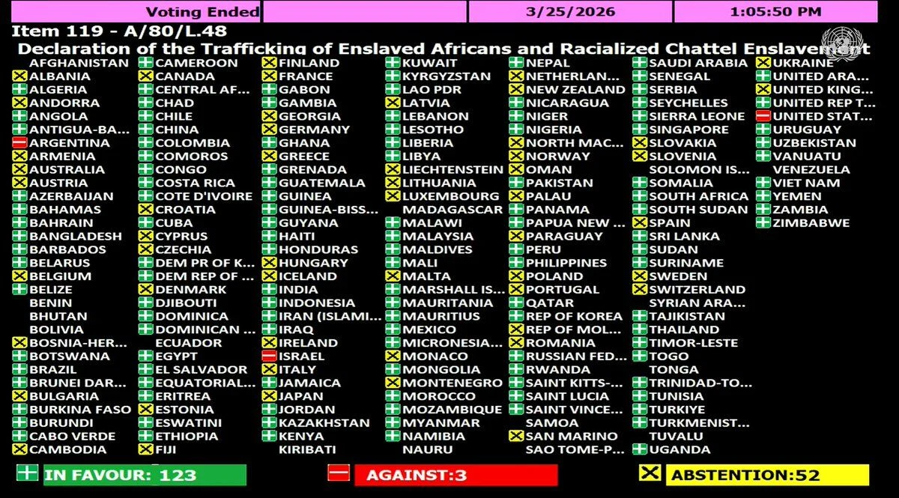

Prise de position
Traite et esclavage des Africains, l’ONU adopte une résolution
Date indiquée par Facebook · 26 mars 2026
Repères éditoriaux
Le 25 mars 2026, l’Assemblée générale de l’ONU a adopté la résolution sur la traite et l’esclavage des Africains par 123 voix pour, 3 contre et 52 abstentions. Nous avons relayé le résultat et relevé l’abstention de la France.
Texte conservé avec la publication
L’Assemblée générale de l'ONU déclare que la traite des Africains réduits en esclavage et l’esclavage racialisé des Africains sont « l’injustice la plus inhumaine et la plus durable contre l’humanité »
123 Pour
3 Contre (États-Unis, Israël, Argentine)
52 Abstentions parmi lesquelles la France.

Sources
Archive rouge · export Facebook · AR-0002-FB-00831
À lire aussi · L'élan de la Libération de Paris · Le lien d’origine